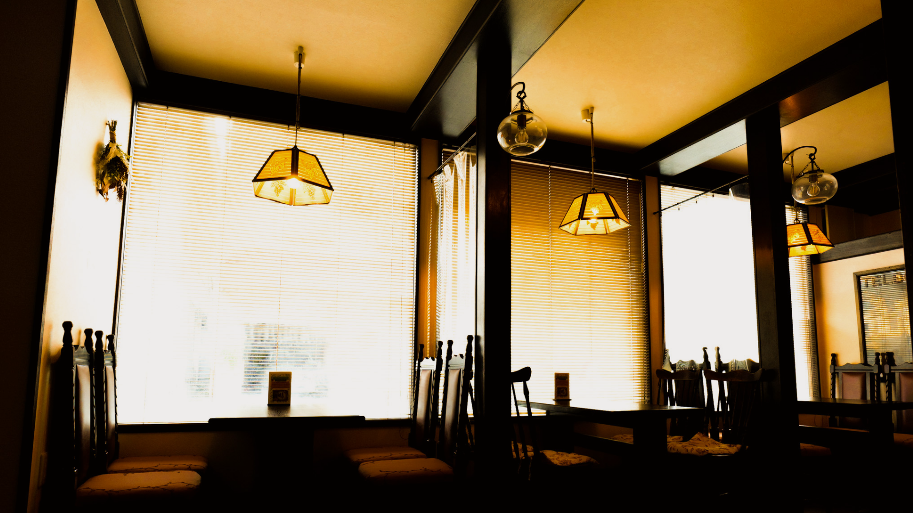
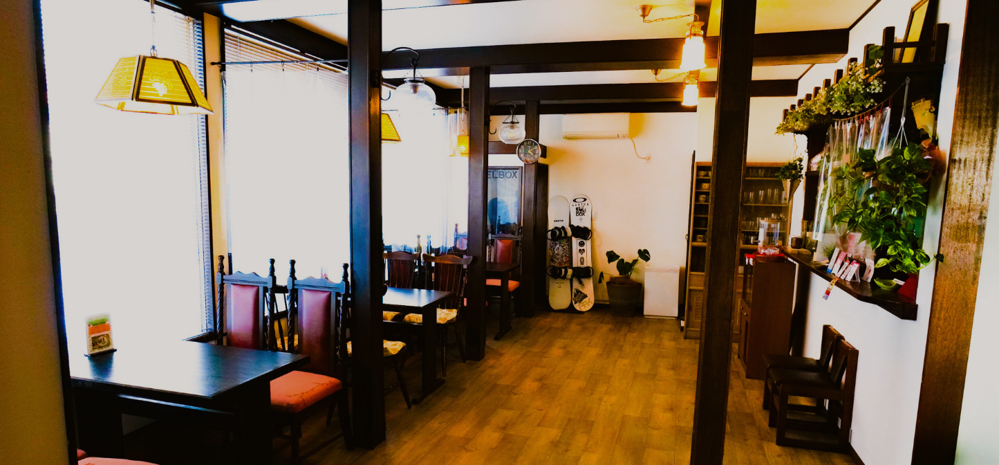
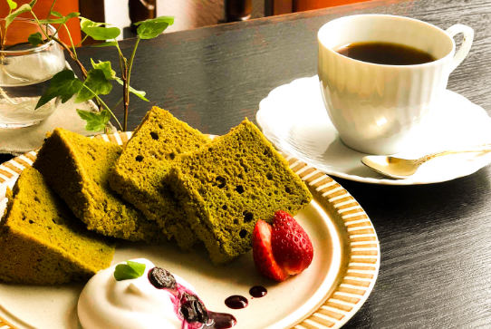
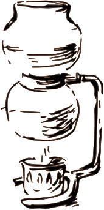
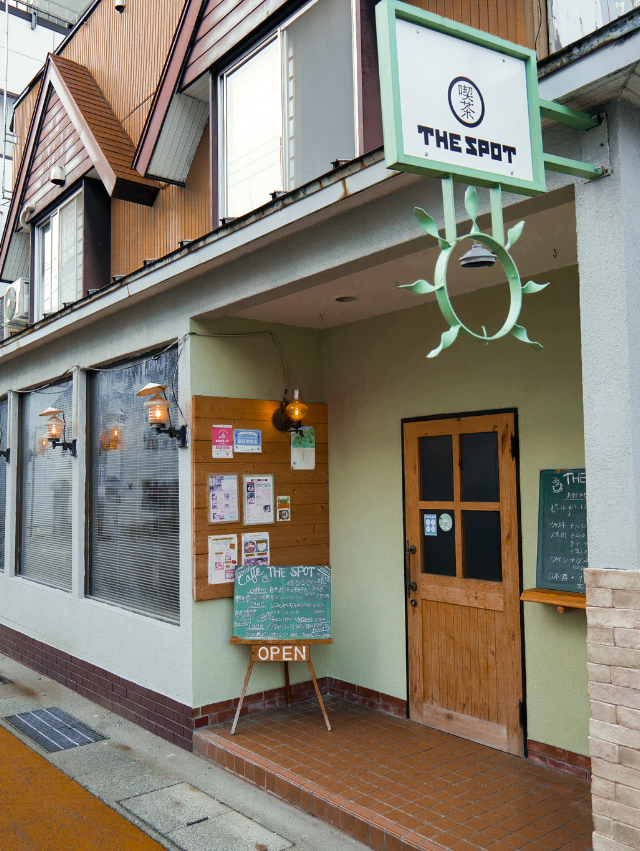

Enjoy your meal and natural life
「食」「ナチュラルライフ」を楽しむ。
白砂糖や添加物などの体や消化に負担のかかるものを加えずに、
地元の食材にこだわって野菜や穀物を中心としたお食事を提供しています。
身体本来が持っている機能を高めて、いつまでも健康で動けるカラダへ。


無農薬・無肥料のオーガニックコーヒーや自家製甘酒を使用したスムージー、南魚沼産コシヒカリの酵素玄米など、白砂糖や添加物などの体や消化に負担のかかるものを加えずに、地元の食材にこだわって野菜や穀物を中心としたお食事を提供しています。ヴィーガン・グルテンフリーもご相談下さい。

Contact
Botanical Cafe THE SPOT
〒949-6101
新潟県南魚沼郡湯沢町湯沢552-8
営業時間.7:00~21:00 (木曜日定休日)
